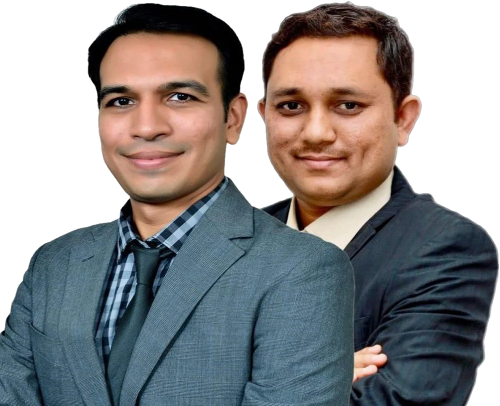
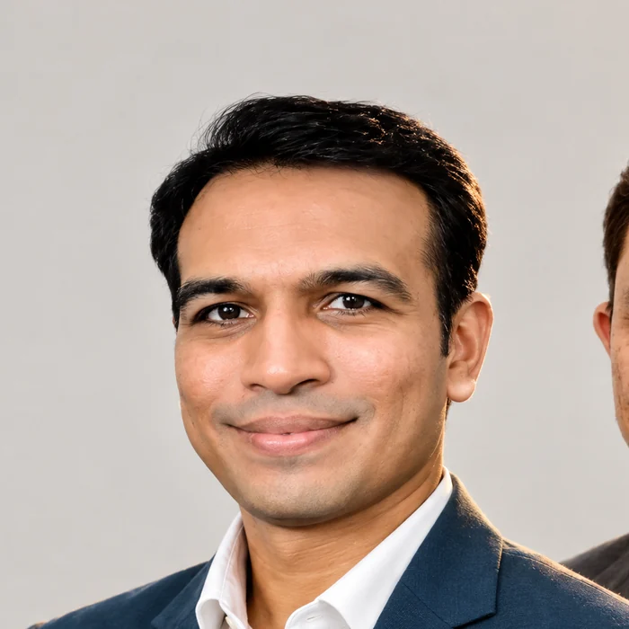
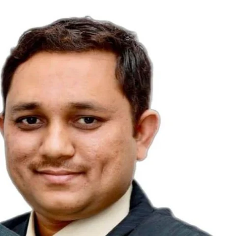
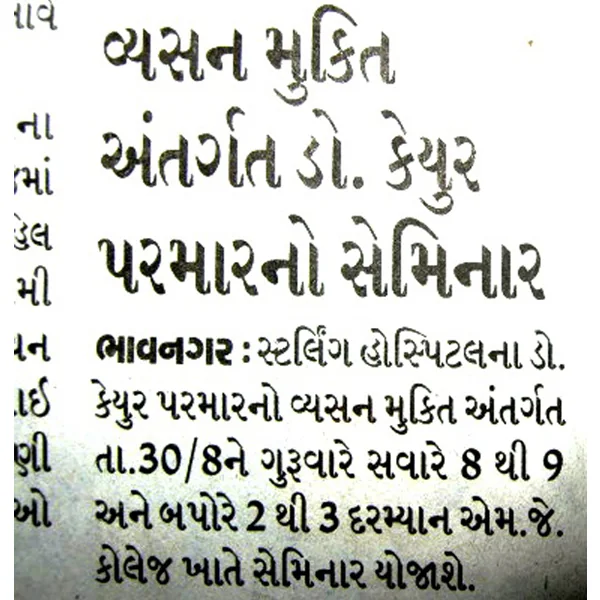

Your doctors
Two neuro-psychiatrists, one standard of care.
Dr. Keyur Parmar and Dr. Vikram Zala see every patient the same way: a full history, a measured scale, a written plan you can read, and a follow-up date fixed before you leave. Choose either doctor at booking, or let reception match you to the earliest slot.


Consultant neuro-psychiatrist · Bhavnagar since 2012
Dr. Keyur Parmar
MBBS, MD Psychiatry · B.J. Medical College & Civil Hospital, Ahmedabad · Gold medallist · Gujarat Medical Council G-19082
Education and experience
MBBS, then MD Psychiatry
B.J. Medical College and Civil Hospital, Ahmedabad, one of Gujarat's largest teaching hospitals. Gold medallist.
Co-investigator, clinical drug trials
Trials on sleep disorders and major depressive disorder during training, alongside dissertations on workplace stress and psychiatric morbidity.
Registered with the Gujarat Medical Council
Registration G-19082. Private practice in Bhavnagar begins the same year: Kiran Neuro-Psychiatry Care, Jail Road.
Consultant neuro-psychiatrist, Sterling Hospital Bhavnagar
Three years of hospital consultant work alongside the growing clinic practice.
Mission Deaddiction
The awareness campaign he founded and runs: 50 or more programmes in schools and colleges on tobacco, gutka, alcohol and ganja. It is why the clinic's deaddiction centre has a schools page.
Focus areas
Languages
Gujarati, Hindi, English.
Registration & memberships
- Gujarat Medical Council, registration G-19082 (2012)
- Member, Indian Psychiatric Society
Research & talks
- Dissertations on workplace stress and psychiatric morbidity
- Co-investigator in clinical drug trials on sleep disorders and major depressive disorder (2010-2012)
- 50+ Mission Deaddiction awareness programmes in schools and colleges
Approach
Dr. Parmar's clinic runs on three habits. Every medicine is explained in the patient's own language before it is written, with what to expect by week 2 and week 6. Every follow-up starts with a score, PHQ-9, GAD-7, Fagerström or AUDIT, so the decision to continue, change or stop a medicine rests on evidence rather than impression. And the family is part of the plan when the patient wants that, and outside the room when they do not. His addiction work starts from the view that gutka and alcohol are chemistry, not character. His sexual health clinic starts from the view that nobody should have to explain themselves at a reception counter.

Consultant neuro-psychiatrist · Since 2022
Dr. Vikram Zala
MBBS · Government Medical College, Bhavnagar · DPM (Neuro-Psychiatry) · B.J. Medical College & Civil Hospital, Ahmedabad
Education and experience
MBBS
Government Medical College, Bhavnagar. Trained in the city he now practises in.
DPM (Neuro-Psychiatry)
B.J. Medical College and Civil Hospital, Ahmedabad, the same department where Dr. Parmar trained.
Consultant, Kiran Neuro-Psychiatry Care
Private consultant practice in Bhavnagar. Runs the child and adolescent clinic and the EEG and epilepsy clinic, and sees most of the clinic's video follow-ups.
Focus areas
Languages
Consultations at the clinic are in Gujarati, Hindi or English.
Clinics he runs
- Child and adolescent clinic: ADHD, autism, learning difficulties, exam stress, screen habits
- EEG and epilepsy clinic, with the EEG recorded on site
- Video follow-ups for patients outside Bhavnagar
Approach
Dr. Zala's clinics are built around the two groups that find a psychiatric visit hardest: children, and people who live far from Bhavnagar. Child visits are booked at the start of a session so the waiting room is quiet, parents and teachers fill rating scales before the visit, and school letters are written by the doctor rather than left to the parent. EEGs are recorded in the clinic and read the same day. Follow-ups for patients in Mahuva, Palitana, Botad or Amreli happen on video once the first visit has been in person.
In the community and the press
Known in Bhavnagar long before this website.


How the clinic works
The same six things happen on every visit, with either doctor.
A clinic is more than its doctors. These are the habits that make a 10-minute follow-up in a busy Bhavnagar OPD feel like care rather than a queue.
You get a token when you book and a time to arrive. Reception runs the queue on a board, and the live queue on the booking page shows where it is before you leave home. Walk-ins are fitted into the next free token.
A two-minute scale on your phone before you enter: PHQ-9, GAD-7, Y-BOCS, ISI, Fagerström or AUDIT. The doctor sees the trend, not just today's answer.
You decide, every time. The usual order is the person alone first, then the family if they agree. Nothing is told to relatives without consent.
Each medicine named, what it is for, when to take it, what to expect by week 2 and week 6. Printed and sent on WhatsApp. The follow-up date is fixed before you leave.
First visit in person. Follow-ups on video once you are stable, or if you live outside Bhavnagar. Fees are shown at booking, before you confirm.
The clinic line, +91 87582 99921, stays open all night for a crisis. For danger to life, ambulance 108 and police 112 come first.
Standards
Standards we hold ourselves to.
These are the rules the clinic follows whether or not anyone is checking. They are also the rules you can hold us to.
- Gujarat Medical Council registration. Every doctor at the clinic is a registered medical practitioner. Dr. Parmar's registration is G-19082, printed on every prescription.
- Indian Psychiatric Society. Dr. Parmar is a member. The Society's clinical practice guidelines are the clinic's reference for treatment choices.
- Informed consent. Before any treatment, in your language: what it is, what it is for, what the alternatives are, and what happens if you say no. Including for EEG and long-acting injections.
- Confidentiality under the Mental Healthcare Act 2017. Your record is yours. Family is told only with your consent, and you have the right to see your own records.
- Digital Personal Data Protection Act 2023. Consent, purpose limitation and the right to erasure apply to everything stored by My Care and Kiran Saathi. ABHA linking is optional.
- No AI decision without a doctor's signature. Every Saathi intake summary, scribe note and report explanation is a draft until a doctor signs it. Saathi never diagnoses and never changes a dose.
The team
The people around the doctors.
Four roles you will meet. Listed by role, because what matters is what each one will and will not ask of you.
Reception and queue desk
Tokens, arrive-by times, WhatsApp confirmations, report collection. Asks for a name and a phone number, nothing more. In private consult mode, only an alias.
EEG technician
Records the EEG on site, sends the preparation instructions before your visit, and has the recording ready for the doctor the same day.
Counsellor
CBT, ERP, parent training and the Quit with Kiran sessions, in Gujarati, Hindi or English. Works from the doctor's written plan.
Saathi care coordinator
The human behind the AI companion. Reads every conversation flagged for risk, follows up missed doses and missed visits, and makes sure a person calls back.